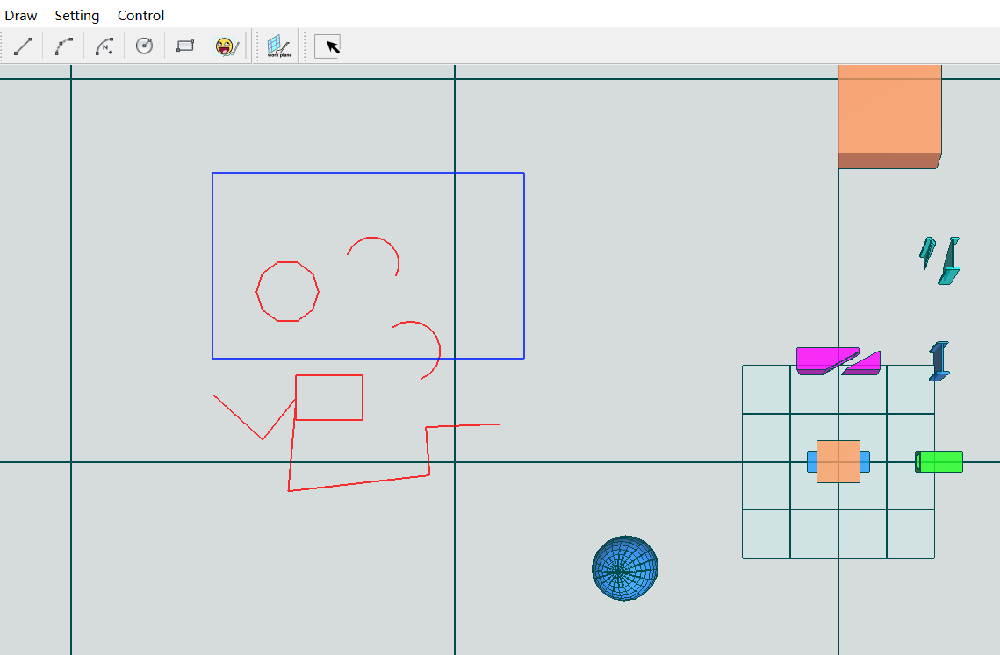

20.框选选择
在三维软件交互中，框选是一种提高工作效率的交互功能，可以根据框选范围选中完全在其中或相交的组件，可以增强用户体验。
框选框的绘制有多种实现方式，本节介绍其中两种，
两种绘制框选框方式
- 对数据进行预
setup，然后在渲染循环中根据当前位置和状态不断的更新modelMatrix以适配当前框的位置和大小，然后绘制； - 在每个渲染循环中，根据鼠标位置实时计算框的位置和尺寸，进行数据的
setup和draw（绘制）；
这两种方式各有优缺点，第一种方式避免了频繁搭建数据和渲染桥梁的过程，但需要在每个渲染循环中进行更多的计算：计算当前的modelMatrix；第二种方式需要在每个渲染循环中进行数据和渲染桥梁的搭建，然后绘制，但不用进行过多的计算过程。
20.1.方式一
下图描述了方式一的工作流程，
- 预
setup初始数据，初始数据为以原点为中心，在XOY平面的单位矩形，后续将（以不同的modelMatrix）不断的渲染该数据； - 屏幕像素位置和深度对应三维空间中的位置，我们根据鼠标初始点击和当前位置，加之深度为
0来通过渲染管线矩阵变换的逆过程得到在世界坐标系中的空间位置，构造空间矩形；然后构造初始矩形到空间矩形的变换矩阵，作为modelMatrix设置到顶点着色器中； - 经过渲染管线的处理，空间矩形被绘制在屏幕上，与初始鼠标位置和当前鼠标位置映射的轴对齐矩形；
计算矩形框的modelMatrix的逻辑看起来有些许复杂，让我们一起探究下，
- 首先根据空间矩形框的尺寸构造缩放矩阵；
- 然后通过旋转将初始矩形旋转到和空间矩形平行，试想一下将
(0，0，1)绕其与空间矩形法向normal叉乘得到的向量rotateDir旋转（(0, 0, 1)和normal的）夹角，使得其与normal同向； - 然后绕空间矩形法向
normal旋转，使得处理后的初始矩形轴与空间矩形轴对齐； - 此时处理后的初始矩形中心仍为原点，偏移到空间矩形中心即可~
我们来看下代码~
Transform ViewerUtils::getRectSelectMatrix(const vector<Vector3f>& rectData)
{
Vector3f rectX = rectData[2] - rectData[1];
Vector3f rectY = rectData[1] - rectData[0];
// 缩放
Vector3f xB(rectX.Length(), 0.0f, 0.0f);
Vector3f yB(0.0f, rectY.Length(), 0.0f);
Transform matScale(xB, yB, Vector3f::BasicZ, Vector3f::Zero);
// 旋转到对应面
Vector3f normal = (rectX * 100.0).CrossProduct(rectY * 100.0);//兼容值太小情况
normal.Normalize();
Vector3f nor2 = Vector3f::BasicZ.CrossProduct(normal);
double ang2 = Vector3f::BasicZ.Angle(normal);
nor2.Normalize();
Transform matRotateFace(nor2, ang2);
// 旋转到轴对齐
Vector3f xAxis;
Transform::MultVector(matRotateFace, Vector3f::BasicX, xAxis);
double angXAxis = xAxis.AngleOnPlaneTo(rectX, normal);
Transform matRotateAxis(normal, angXAxis);
// 偏移
Vector3f rectCenter = 0.5 * (rectData[0] + rectData[2]);
Transform matTrans;
matTrans.SetTranslate(rectCenter);
Transform matRe;
Transform::Mult(matTrans, matRotateAxis, matRe);
Transform matRe2;
Transform::Mult(matRe, matRotateFace, matRe2);
Transform matRe3;
Transform::Mult(matRe2, matScale, matRe3);
return matRe3;
}
上述代码过程给人的感觉是执行了一些计算过程，同时申请和释放了一些变量，嗯，这貌似不是一种良好的味道，尤其是在频繁执行时；而处理过多也意味着可能的误差累积过程...... 让我们来看下方式二吧~
提示
如果采用方式一进行选择框的绘制，那么记得在渲染循环中设置点光源位置为相机位置沿Front逆向偏移一段距离，以让选择框显示效果更亮。
20.2.方式二
方式二的过程流程如上图，
- 屏幕像素位置和深度对应三维空间中的位置，我们根据鼠标初始点击和当前位置，加之深度为
0来通过渲染管线矩阵变换的逆过程得到在世界坐标系中的空间位置，构造空间矩形；然后setup； - 经过渲染管线的处理，空间矩形被绘制在屏幕上，与初始鼠标位置和当前鼠标位置映射的轴对齐矩形；
20.3.补充
思考
-
为什么我们在计算屏幕点的空间位置时，选择深度为
0呢？ 其实选择其他在[0,1]间的深度也可，经过渲染管线的处理同样能渲染到屏幕“正确”位置，但请想一下，我们为什么要显示选择框呢？为了更优化直观的展示选择范围，进而“选中”在其中的元素！ -
怎么判断在选择范围中呢？一种处理办法是考虑是否在“框选”的透视平截头体中对应空间内，也就是深度为
0和深度为1构造的两个矩形拉伸的融合体范围内的元素。
构造好框选的融合体后，我们可以进一步构造空间BSP树，然后快速的判断场景中的元素是否在BSP树对应的空间内。
提示
我们实现的框选支持正选与反选，快来试着操作一下吧，向左上、右上、左下、右下画框选框，具体逻辑可自行思考~
20.4.总结
作者（哈市雪花）在GLViewer中采用了方式二来绘制框选框，二者各有优点，方式二具有更优的效率、准确性和可靠性，但其增加了相对多的接口。
我们回顾下框选实现逻辑，
- 点击按钮调用
boxSelect进入框选状态，此时会屏蔽鼠标操作相机动作； - 点击鼠标左键不放，进行移动过程中不断的调用
ViewerSetting.UpdateRectSelect更新选择框位置； - 鼠标左键松开时，清理当前选择内容，根据构造的选择空间（透视平截头体内连接近平面和远平面的融合体）调用
Model.UpdateSelectInfo识别选择元素；同时调用ViewerSetting.ClearRectSelect清理选择框数据。
如果一切正常，或者遇到的问题被排查解决，那么运行之后的效果如下，有问题或疑问请查看工程代码或联系我。
